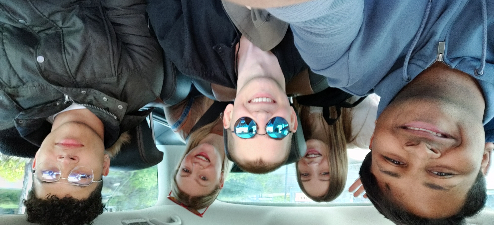

The home of filmmaking right in the heart of Milton Keynes. We provide a 3-month film production cycle where you create, film and produce your own films with us across the year.
- Acting for Screen
- Acting for Musical Performance
- Improvisation & Devised Screen Performance
- Scriptwriting
- Directing & Production
- Leadership
- Cinematography & Audiovisual Production
- Editing & Digital Mastering

